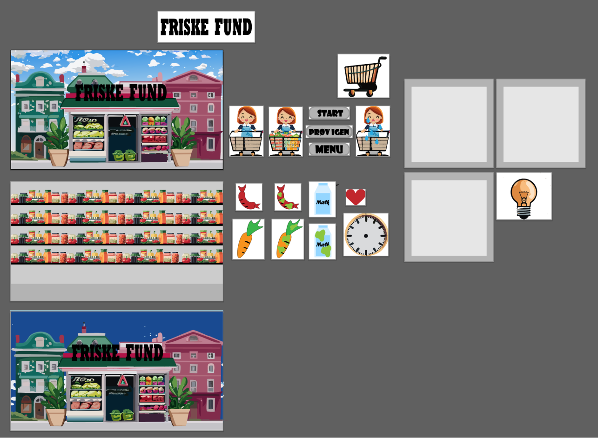

Tema 4: Animation
I tema 4 fokuserede jeg på de grundlæggende animationsteknikker. Jeg undersøgte principperne bag animation, herunder bevægelse, timing og koreografi. Gennem praktiske øvelser lærte jeg at skabe bevægelse og liv i digitale elementer ved hjælp af CSS og JavaScript. Dette tema gav mig en forståelse for animationens rolle i digital kommunikation og udvidede mine færdigheder inden for visuel storytelling og brug af bevægelse, for at forbedre brugeroplevelsen.
Link til webpsite for tema 4-
I dette tema arbejdede jeg med idegenereringsteknikker, herunder 10-ideer-øvelsen, for at finde den rette idé til mit spil. I mit spil skal spilleren fange de friske fødevarer, såsom mælk, gulerødder og pølser, der falder ned fra toppen af skærmen. Hver gang spilleren trykker på en fødevare, og den rammer jorden, optjener man et point. Dog skal man undgå at fange de dårlige fødevarer, såsom dårlig mælk, gulerødder og pølser. Hvis spilleren fanger en dårlig fødevare, mister vedkommende et liv ud af i alt tre liv. Spillet varer et halvt minut, og målet er at fange mindst 10 sunde fødevarer, som der skal til, for at vinde. Hvis spilleren mister alle tre liv, inden de ti fødevarer er indsamlet, så ”dør” vedkommende i spillet. Udfordringen ligger i at balancere mellem at fange de friske fødevarer, men at undgå de dårlige, for at opnå det højeste antal point inden for den givne tid.
- 
I spillets design er der omhyggeligt integreret forskellige elementer, for at skabe en sammenhængende og engagerende oplevelse. Figurerne bærer præg af både ”Baby Bias” og en tydeligt computer-genereret tegnestil, der gør det let at identificere deres realverden, og som er redresseret i en tegnet version. Farvevalget understreger genkendelige nuancer fra virkeligheden, men der er den forskel, at de ”dårlige fødevarer” får en ekstra markering med kraftige grønne pletter, for at signalere deres dårlige status. Tegningen af figurerne er forankret i ”Baby Bias”-stilen, der tilfører en barnlig lethed, uden at tilføje ansigter. Formålet er at fremkalde en øget omsorg og beskyttelsesfølelse hos spillerne, samt at skabe en positiv reaktion over for figurerne, selvom de kun er todimensionelle. Typografisk set er der indhentet inspiration fra den nuttede og charmerende ”Kawaii”-stil, der bidrager yderligere til spillets overordnede design. Baggrundsdesignet er strategisk opbygget ved at anvende ”Rule of Thirds,” hvilket placerer hovedpersonen, husmoren, i den nedre del af venstre side af billedet, og beriger spillets baggrund. Hjemmesiden og spillesiden er designet med en industriel tilgang, hvor funktionalitet og simpelhed er i fokus, hvilket skaber en helstøbt og sammenhængende æstetik for spillet.
-
I dette tema har jeg dedikeret en betydelig indsats til udforskning af skitseringsteknikker, hvor jeg har skabt en Paper-Prototype-Video, med det formål at danne en overordnet forståelse af spillets funktion, inden jeg gik i gang med den egentlige programmering.
-
En vigtig del af denne proces involverede brugen af aktivitetsdiagrammer og State Machine-diagrammer, der hører under teorierne for grundlæggende animation, og det gjorde jeg med det formål at optimere brugergrænsefladerne. Disse diagrammer blev anvendt til at visualisere og kommunikere, hvordan mit spil fungerede, og hvilke hensigter der lå bag spillet. Aktivitetsdiagrammer gav mig en klar struktur over de forskellige aktiviteter og processer, der indgik i spillet, mens State Machine-diagrammer i stedet hjalp med at illustrere, hvordan spillet reagerede på forskellige tilstande og overgange.
-
Inden for dette tema har jeg fokuseret intensivt på JavaScript og CSS med særligt fokus på placeringen af brugergrænsefladen (UI) samt spilelementerne i mit spil. Inden for CSS har jeg implementeret Keyframes, der præcist definerer start- og slutpunkterne, for handlinger udført af UI og spilelementer. For eksempel anvender jeg Keyframes til at lade mine elementer falde ned ad skærmen ved spilstart eller til helt at forsvinde fra spilsiden, når de er blevet aktiveret. Inden for JavaScript har jeg erhvervet basale kundskaber om, hvad JavaScript er, og hvordan det fungerer. Jeg har anvendt JavaScript til at styre handlingerne forbundet med mine elementer, for eksempel til nulstilling af både liv og tid, når spillet genstartes. Derudover har jeg ved hjælp af JavaScript fået start- og informationsknapperne i spillet til at udføre handlinger ved tryk. Dette har styrket spillets funktionalitet og interaktivitet, og det har givet mig mulighed, for at skabe en mere dynamisk brugeroplevelse